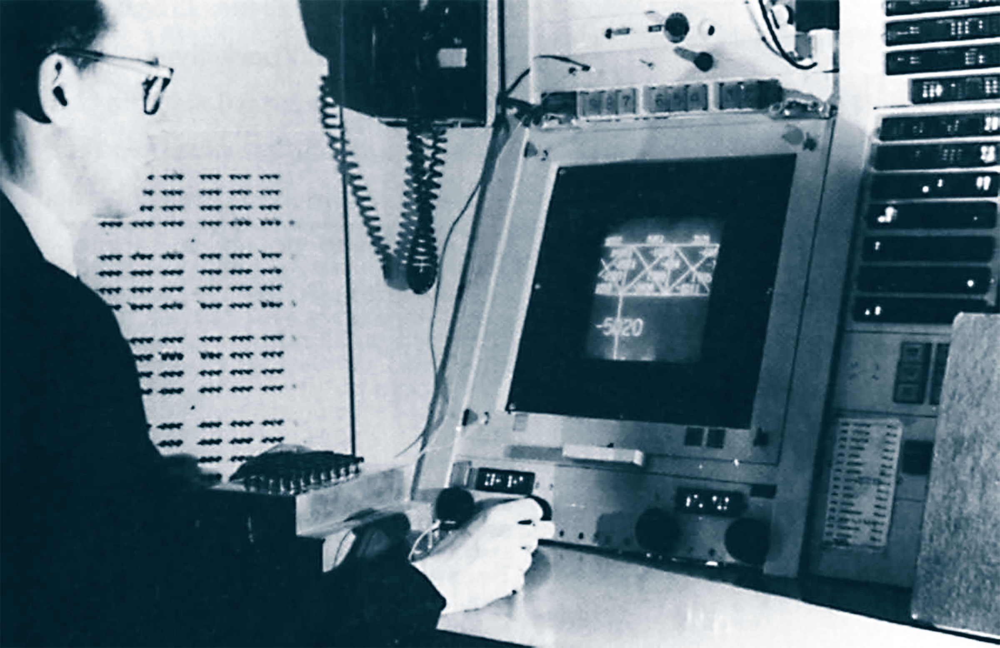

Lawrence Roberts (1937-2018)
Élete
Lawrence Gilman Roberts (1937. december 21. – 2018. december 26.) amerikai mérnök , aki 2001-ben Draper-díjat kapott "az internet fejlesztéséért ", és 2002-ben a Principe de Asturias-díjat. Az Advanced Research Projects Agency programvezetőjeként, majd irodaigazgatójaként Roberts és csapata létrehozta az ARPANET-et Donald Davies brit informatikus és Paul Baran lengyel-amerikai mérnök által feltalált csomagkapcsolási technikák segítségével . Roberts később a Telenet kereskedelmi csomagkapcsoló hálózat vezérigazgatója volt , amely Észak-Amerika első nyilvános adathálózata. Roberts, akit Larryként ismertek, a Connecticut állambeli Westportban született és nőtt fel .Elizabeth (Gilman) és Elliott John Roberts fia volt, mindketten kémiából doktoráltak. Állítólag fiatalkorában Tesla tekercset épített , televíziót szerelt össze, és tranzisztorokból épített telefonhálózatot tervezett szülei cserkésztáborának .Roberts a Massachusetts Institute of Technology-ba (MIT) járt, ahol bachelor fokozatot (1959), mesterfokozatot (1960) és Ph.D. (1963), mind az elektrotechnikában .Ph.D. a "Háromdimenziós szilárdtestek gépi észlelése" tézise a számítógépes látás területéről szólt.
ARPANET
Abban az évben az operációs rendszer alapelvei szimpóziumon Roberts bemutatta a Clark üzenetváltási javaslatán alapuló tervet. Ott találkozott Donald Davies csapatának egy tagjával ( Roger Scantlebury ), aki bemutatta a csomagváltással kapcsolatos kutatásaikat, és javasolta az ARPANET-ben való használatát.Roberts Davies csomagváltási koncepcióját alkalmazta az ARPANET-hez, és Paul Barantól kért véleményt. 1973-ban Roberts elhagyta az ARPA-t, hogy csatlakozzon a BBN-nek a születőben lévő csomagkapcsolási technológia kereskedelmi forgalomba hozatalára tett erőfeszítéseihez a Telenet formájában , amely az első FCC-licenccel rendelkező nyilvános adathálózat az Egyesült Államokban. 1973 és 1980 között a vezérigazgatója volt. Roberts röviddel a véglegesítése előtt csatlakozott ahhoz a nemzetközi erőfeszítéshez, hogy szabványosítsa a virtuális áramkörökön alapuló csomagkapcsolási protokollt.
Igazgató, elnök
1983-ban csatlakozott a DHL Corporation elnöki posztjához. Akkoriban azt jósolta, hogy a hangtömörítési technológia miatt a sávszélességek csökkenni fognak. 1983 és 1993 között a NetExpress, egy aszinkron átviteli móddal (ATM) berendezéssel foglalkozó vállalat vezérigazgatója volt . Roberts 1993 és 1998 között az ATM Systems elnöke volt. A Caspian Networks elnöke és műszaki igazgatója volt, de 2004 elején távozott; A Caspian 2006 végén beszüntette működését. 2011-től Roberts volt az Anagran Inc. alapítója és elnöke. Az Anagran ugyanazon a területen folytatja a munkáját, mint a Caspian: IP-folyamkezelés az internet szolgáltatásának jobb minőségével.